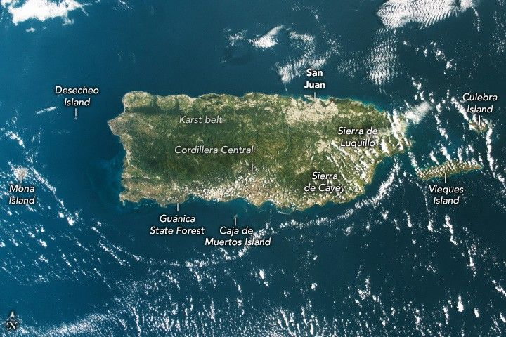

Puerto Rico From Above
An astronaut aboard the International Space Station took these photos of Puerto Rico. The top image offers a wide view of the island, while the bottom image provides a detailed view of the San Juan metropolitan area.
Puerto Rico is a Caribbean archipelago, consisting of the main island (Island of Puerto Rico) and more than 100 smaller islands and cays. Among the larger nearby islands, Culebra and Vieques lie to the east, both of which are separate municipalities. Mona, Desecheo, and Caja de Muertos flank the western and southern sides. The archipelago is part of a volcanic island platform that formed millions of years ago.
The main island measures approximately 110 miles (180 kilometers) from west to east and 40 miles (65 kilometers) from north to south. It is divided into three main physiographic regions: the karst belt, the mountain zone, and the discontinuous coastal plain. The Cordillera Central spans much of the island’s middle from east to west. The peaks in this range have steep topography, as indicated by shadows cast into the valleys, and include the island’s highest peak: Cerro de Punta, which rises to 1,338 meters (4,390 feet).
The forests in the northern karst region appear mottled, a characteristic of the karst topography with mogotes, isolated steep-sided hills that emerge from the sandy plains of northern Puerto Rico. From above, this area has been said to resemble an “upside-down egg carton” due to its unique texture.
Although Puerto Rico is relatively small in area, its climate—especially rainfall—varies across the island. This variation in rainfall is noticeable in the image, where the southern coast appears brown and dry compared to the tropical green of the rest of the island. One of the main factors contributing to this is the orographic effect caused by mountain ranges, including the Cordillera Central, Sierra de Cayey, and Sierra de Luquillo.
These ranges act as barriers to winds from the east-northeast. As humid air rises along the northern slopes, it cools and condenses, producing rain. Air that reaches the southern side has lost much of its moisture, creating a “rain shadow.” As a result, Puerto Rico has both a rainforest (El Yunque National Forest) and a dry forest (Guánica State Forest), located around 60 miles (100 kilometers) apart.
A detailed view of the island’s north side shows tan urban areas along the coast and inland, surrounded by green vegetation. The upper third of the image features blue ocean waters dotted with white clouds.
The second photo shows a more detailed view of the San Juan metropolitan area and its surroundings. San Juan, the capital of Puerto Rico, is made up of several neighborhoods, including Río Piedras, Santurce, and El Viejo San Juan (Old San Juan).
Over the decades, the metro area expanded along the coastal plains. This growth has joined San Juan with other municipalities, such as Guaynabo, Cataño, Bayamón, and Toa Baja to the west along the PR-22 route; Carolina to the east; and Trujillo Alto to the southeast. The expansion also extends southward to Caguas, located near the island’s mountainous interior via the PR-52 route.
Other notable locations visible in the detailed view include the towns of Vega Baja (to the left), Río Grande (to the right), and Comerío (toward the bottom), as well as water bodies like the Río de la Plata, La Plata Lake, and Río Grande de Loíza.
Beyond the San Juan metropolitan area, other populous coastal cities include Ponce to the south, Arecibo to the north, and Mayagüez on the western coast. These urban centers are home to much of the island’s population, while smaller cities and towns are scattered throughout the central mountainous regions.